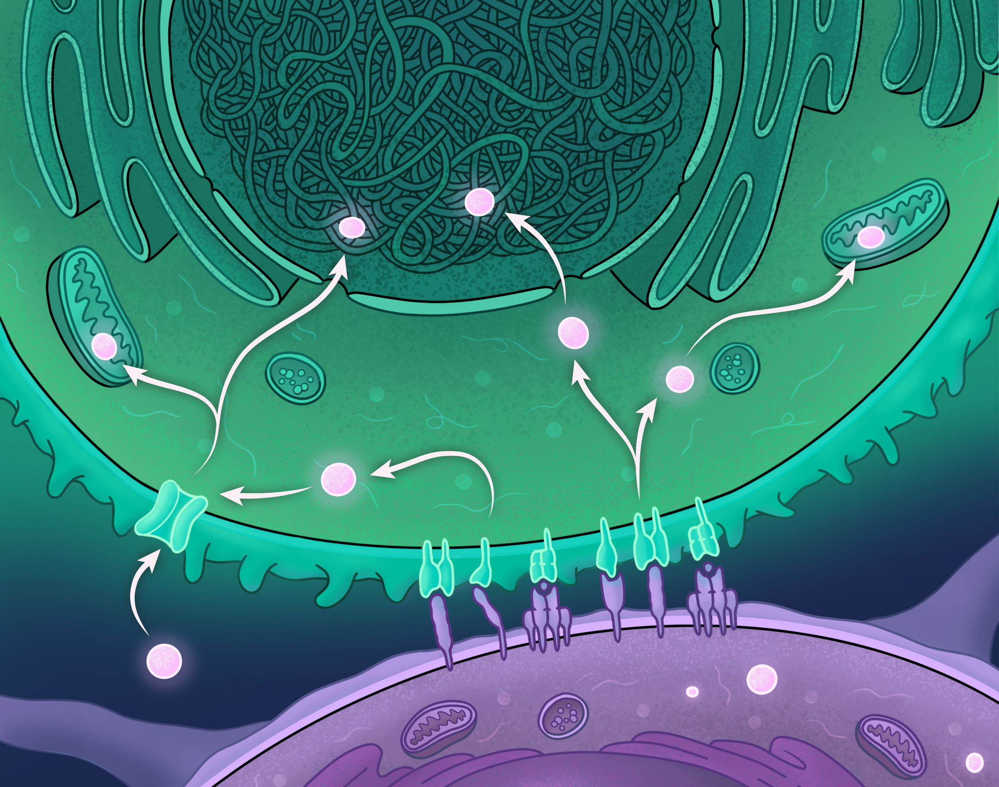
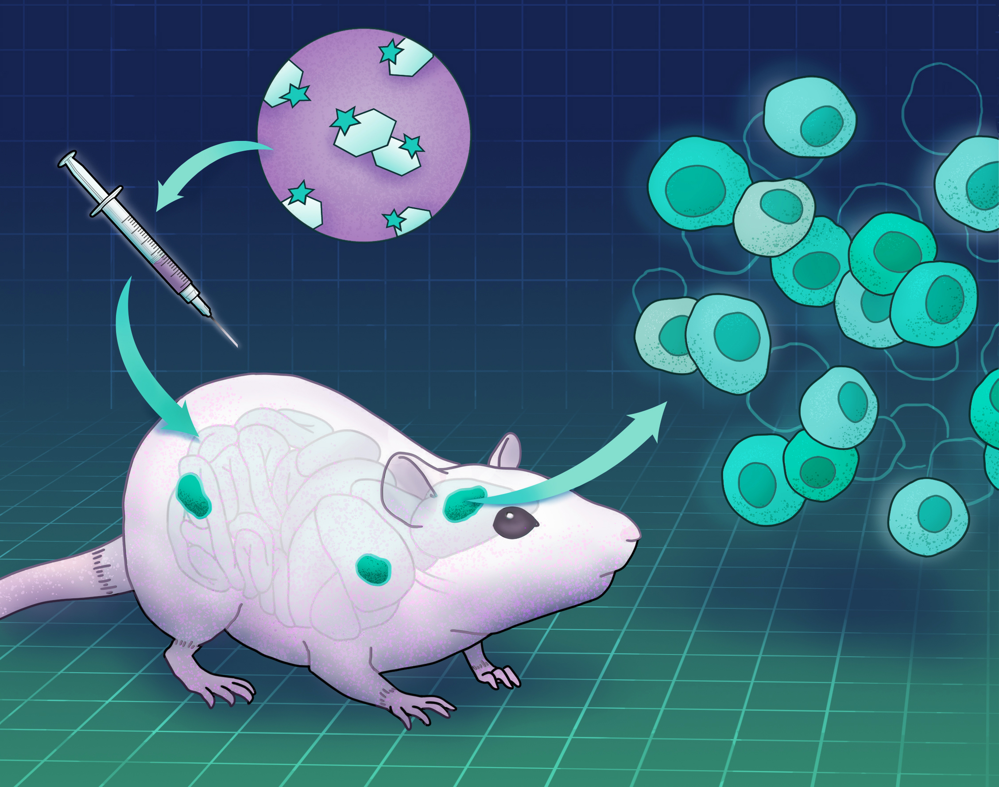
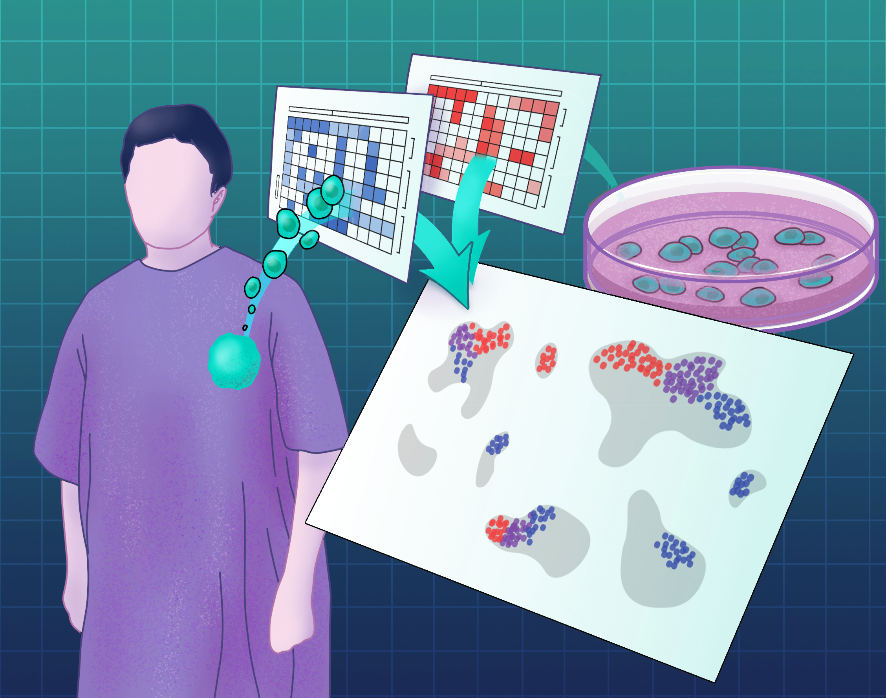
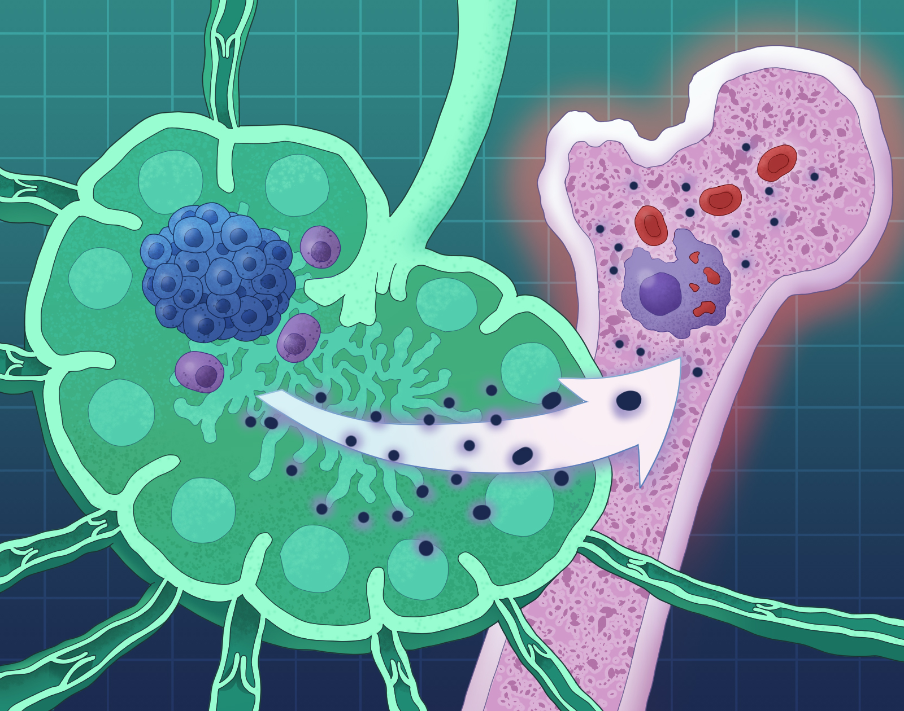

Research Focus
Investigating how metabolism shapes immune fate and function
Our laboratory integrates cell biology, biochemistry, and computational approaches to understand how intracellular metabolic programs and the tumor microenvironment cooperate to drive T cell dysfunction — and how these insights can be harnessed therapeutically.

Molecular Regulation of Immune Metabolism
We investigate the molecular checkpoints governing T cell metabolic programs — including TCR and co-receptor driven signal transduction, as well as how the resultant metabolic alterations in immune cells influence epigenetic, transcriptional, and post-transcriptional programs that drive cell fate decisions in health and disease.

Environmental Control of Immune Function
The tumor microenvironment imposes profound metabolic constraints on T cells. We study how the balance between nutrient demand and availability limit functional immune programs within tumors.

Metabolic Drivers of Immune Heterogeneity
Using single-cell approaches, we map the metabolic diversity within T cell populations to identify how distinct metabolic states give rise to functionally heterogeneous immune cell subsets in tumors, particularly subtypes that do not respond to conventional immunotherapies.

Immune Dysregulation in Hematologic Malignancies
We apply mechanistic insights to lymphoid malignancies, studying how the unique cellular landscape of hematologic cancers and anti-cancer therapeutics shapes immune responses to both cancer and viral infections.
Experimental Approaches
An integrated toolkit for studying immune metabolism
Metabolic Profiling
Seahorse XF analysis, stable isotope tracing, and mass spectrometry-based metabolomics to quantify cellular metabolic flux.
Immunologic Assays
High-parameter flow cytometry, functional killing assays, cytokine profiling, and ex vivo co-culture systems.
Molecular Genetics
CRISPR-Cas9 screens, retroviral/lentiviral overexpression, and conditional knockout mouse models to dissect gene function.
Mouse Models
Genetically engineered mouse models of lymphoma, syngeneic tumor challenges, and adoptive T cell transfer systems.
Single-Cell Genomics
scRNA-seq, ATAC-seq, CITE-seq, and spatial transcriptomics to resolve intra-tumoral T cell heterogeneity at single-cell resolution.
Synthetic Biology
Engineered T cell receptors, CAR-T platforms, and synthetic metabolic circuits to rewire immune cell function and validate therapeutic targets.